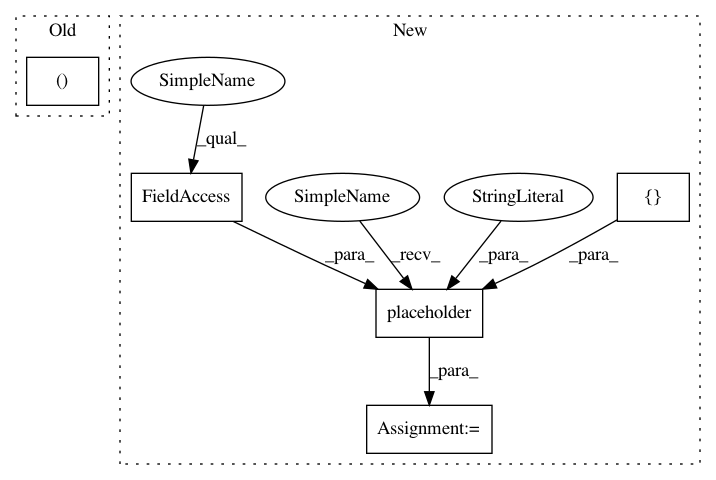

e1dba7bcd77899f2477b5fe37b247320d628cd73,texar/models/tsf/classifier.py,Classifier,_build_model,#Classifier#,48
Before Change
("y", y),
("logits", logits),
("prob", prob),
("pred", pred),
("accu", accu),
("loss", loss),
("losses", losses),
After Change
x = tf.placeholder(tf.int32, [batch_size, None], name="x")
y = tf.placeholder(tf.int32, [batch_size], name="y")
gamma = tf.placeholder(tf.float32, [1], name="gamma")
embedding = tf.get_variable(
"embedding", [hparams.vocab_size, hparams.embedding_size])
x_emb = tf.nn.embedding_lookup(embedding, x)
self_gate_hparams = utils.filter_hparams(hparams, "self_gate")
print(self_gate_hparams)
self_gate = SelfGate(self_gate_hparams)
inputs, alpha = self_gate(x_emb, gamma)
if not self._hparams.use_self_gate:
inputs, alpha = x_emb, alpha
In pattern: SUPERPATTERN
Frequency: 3
Non-data size: 5
Instances
Project Name: asyml/texar
Commit Name: e1dba7bcd77899f2477b5fe37b247320d628cd73
Time: 2017-12-10
Author: zichaoy@cs.cmu.edu
File Name: texar/models/tsf/classifier.py
Class Name: Classifier
Method Name: _build_model
Project Name: asyml/texar
Commit Name: b34c734a913cc2e0cc33e544a0a3ed136f895a44
Time: 2017-12-23
Author: zichaoy@cs.cmu.edu
File Name: texar/models/tsf/tsf_classifier.py
Class Name: TSFClassifier
Method Name: _build_inputs
Project Name: asyml/texar
Commit Name: e1dba7bcd77899f2477b5fe37b247320d628cd73
Time: 2017-12-10
Author: zichaoy@cs.cmu.edu
File Name: texar/models/tsf/classifier.py
Class Name: Classifier
Method Name: _build_model
Project Name: asyml/texar
Commit Name: da98baaf6899c5639e23316f2ae00f60f080d14b
Time: 2018-02-09
Author: zichaoy@cs.cmu.edu
File Name: texar/models/tsf/tsf_classifier_att_lm_rec.py
Class Name: TSFClassifierAttLMRec
Method Name: _build_inputs